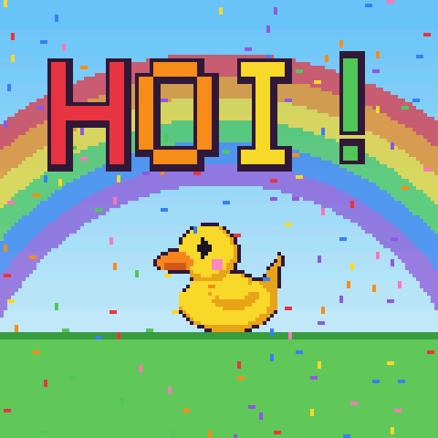
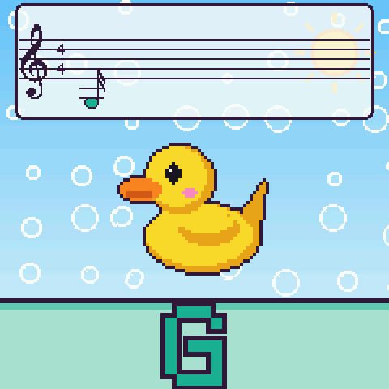
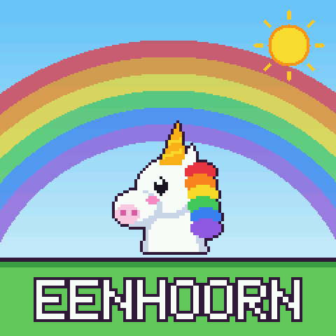
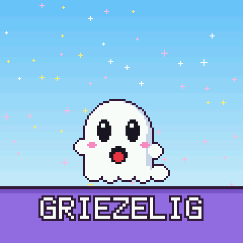
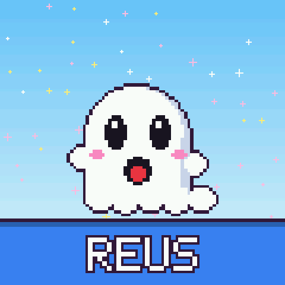
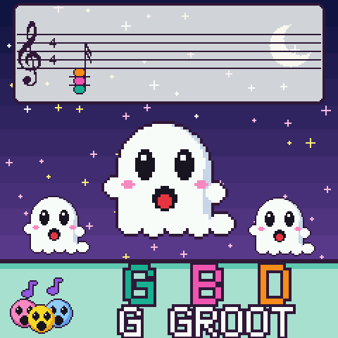
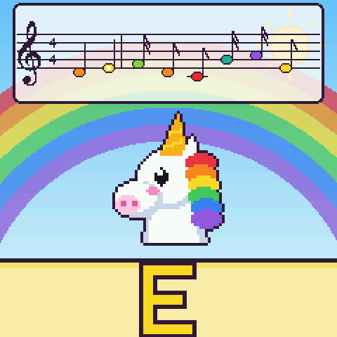
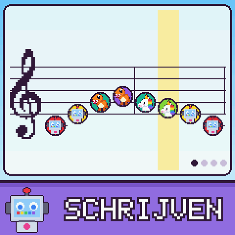
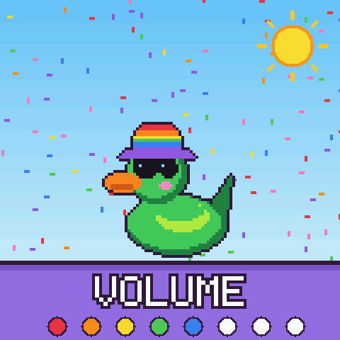
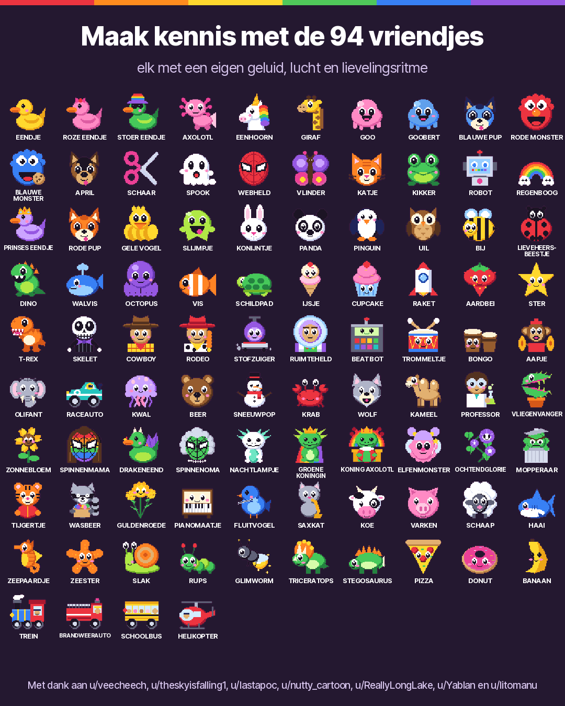

Rainbow mode is Josh's. Josh made it in English, first for one four-year-old and then for the r/MVaveFM1 crowd. This is a Dutch translation of it, the toy's screen and this page. The original is at joshbartlettband-web.github.io/felucca-rainbow.
Regenboogmodus
Muziekspeelgoed voor kleine handjes. Het is gratis firmware die van de M-VAVE FM-1-synth iets maakt waar een jong kind op kan spelen. Het begon als speelgoed voor één vierjarige, en daarna bleef de r/MVaveFM1-groep vriendjes sturen.
Let op: de installer voor de FM-1 heeft nog de vorige versie, terwijl we de nieuwe nakijken. De browserversie heeft alles.
Geen FM-1? Je kunt toch spelen, met de toetsen op het scherm of het toetsenbord van je computer.
Download de video (90 seconden) als je hem wilt delen. De video is nog de Engelse.
Hoe het voelt
- Elke toets laat zijn noot zien, groot en in een eigen kleur, zoals de klokjes in de muziekles. C is rood, D oranje, E geel, F groen, G blauwgroen, A paars en B roze.
- Er zijn 94 vriendjes, en elk heeft een eigen plaatje, geluid, lucht en lievelingsritme. Eendjes, een eenhoorn, een T-Rex, een brandweerauto met een sirene, een piano die een echte pianoopname speelt. Twaalf kwamen zo uit de fantasie van een kind, zoals Spinnenmama en Drakeneend.
- 21 ritmes, van disco en reggae tot lofi, acid en een echte drumbreak. De baslijn past altijd, welke toetsen er ook worden ingedrukt.
- De draaiknoppen maken het vriendje groot of klein, maken van dag nacht, voegen een echo toe en laten alles wiebelen. De bovenste knoppen zijn geluidstrucjes, zoals HIK, ACHTERUIT en BEVRIES.
- De knop ALGORITHM verandert hoe de toetsen spelen. Eén toets kan een heel akkoord spelen. De toetsen kunnen tokkelen zoals een Omnichord. Of de zwarte toetsen houden akkoorden vast terwijl de witte de melodie spelen.
- Er zijn ook spelletjes. RADEN is een spel voor het gehoor. VOLGEN laat bij 17 oude liedjes steeds de volgende toets oplichten. AKKOORDEN leert akkoorden, van een eerste C tot lofi-septiemen. Bij DOE MIJ NA speelt het vriendje een patroon en speelt je kind het na.
- Elk gewonnen spelletje is een ster, en sterren openen geheimen. Bij tien sterren komt er een nieuwe hoed. Bij 25 verschijnt het noorderlicht.
- SAVE opent een grote notenbalk om liedjes te schrijven, zoals in Mario Paint. Elke toets zet een vriendje op de balk, PLAY zingt het terug, en morgen staat het er nog. Speel mee terwijl het rondgaat om er meer bij te zetten.
- Terwijl je speelt, zakt er een notenbalk naar beneden die elke noot in zijn kleur opschrijft. Hou je een toets langer vast, dan wordt de noot langer. Een snel tikje is een zestiende, lang drukken een hele noot.
- Er zijn 15 luchten en tien hoeden. De begroeting kan je kind bij naam noemen. Volwassenen kunnen een volumegrens instellen voor kleine oortjes.
- Een paar vriendjes lijken een beetje op figuren uit tv en film. Liever niet? Hou HOME een seconde vast en draai PRESETS naar links. Dan worden het eigen vriendjes, met dezelfde geluiden.
- Alles op het scherm is Nederlands: de namen, de spelletjes, JA! en NOG EENS. Een paar namen en ritmes bleven Engels, zoals GOO, ROCK en DISCO. De knoppen heten zoals ze op de FM-1 staan.
Op het scherm van de FM-1

HoiEen begroeting, elke keer dat hij aangaat

Een kleur voor elke nootDruk een toets in en zie zijn letter

94 vriendjesDraai aan PRESETS om ze te leren kennen

21 ritmesDruk op PLAY en het vriendje danst

GeluidstrucjesTik op een bovenste knop: REUS

Van dag naar nachtEen draaiknop verandert de lucht en het geluid

Noten, opgeschrevenIn kleur, en zo lang als ze klinken

Schrijf een liedjeDruk op SAVE, dan op de toetsen

Een volume voor volwassenenHou HOME vast, druk op OCT- of OCT+
Maak kennis met de vriendjes

Probeer het
In je browser
Dezelfde firmware, gewoon in je browser. Het werkt op computers, telefoons en tablets.
Open de demo Zet je geluid aan. Misschien moet je één keer tikken om het op gang te krijgen.Op een M-VAVE FM-1
Sluit hem aan met USB en druk op Install. Het duurt ongeveer een minuut.
Open de installer Je hebt Chrome of Edge nodig op een computer of een Android-telefoon, en een USB-kabel. Met Safari en iPhones gaat het niet. De installer zelf is in het Engels.Zeg dank je wel
Regenboogmodus is gratis en blijft gratis. Wil je Josh bedanken? Een ster op GitHub helpt, voor Regenboogmodus en ook voor Felucca, want daar is het op gebouwd.
Is het veilig? Kan ik terug?
Ja. Op de pagina van de installer staat een stuk "Return to official V15". Je haalt het officiële bestand van de website van M-VAVE, en de installer maakt een back-up van je FM-1 voordat hij terugschakelt. Firmware installeren is altijd op eigen risico. Dit is een fanproject. M-VAVE heeft het niet gemaakt en staat er niet achter.
Hoe kom ik uit Regenboogmodus?
Hou HOME en SAVE samen 3 seconden vast. Dan krijg je de volledige Felucca-synth (in het Engels), met je laatste sessie precies waar je hem liet. Regenboogmodus komt terug als de FM-1 weer aangaat.
Dank je wel
Deze ideeën kwamen van mensen op r/MVaveFM1.
- u/veecheech bedacht de T-Rex, het Skelet, de Cowboy, Rodeo, de Stofzuiger en de Ruimteheld, en TOKKELEN zoals op een Omnichord.
- u/theskyisfalling1 vroeg om nootlengtes op de notenbalk, zodat kinderen ook ritme oppikken.
- u/lastapoc wilde een liedjesmaker zoals in Mario Paint. Dat werd SCHRIJVEN.
- u/nutty_cartoon bedacht de namen van de akkoorden, het spel RADEN en VOLGEN.
- u/Yablan vroeg om akkoordlessen. Dat werd AKKOORDEN.
- u/litomanu wilde 303-acidgeluiden. Nu zijn er de Professor, de Vliegenvanger, de Zonnebloem en het ritme ACID.
- u/ReallyLongLake vroeg om een schakelaar die de vriendjes die op tv-figuren lijken omruilt voor eigen vriendjes.
Een idee voor een vriendje, een geluid of een spelletje? Vertel het op r/MVaveFM1 (in het Engels). Iedereen staat in CREDITS.md.